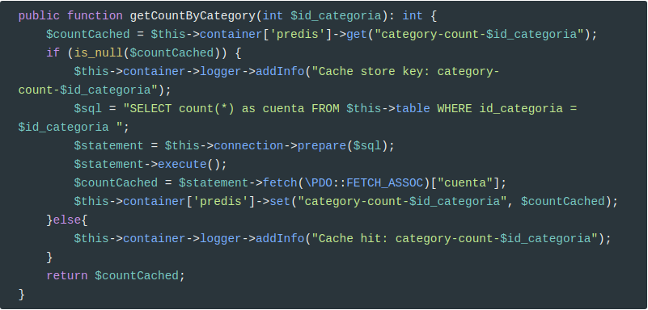
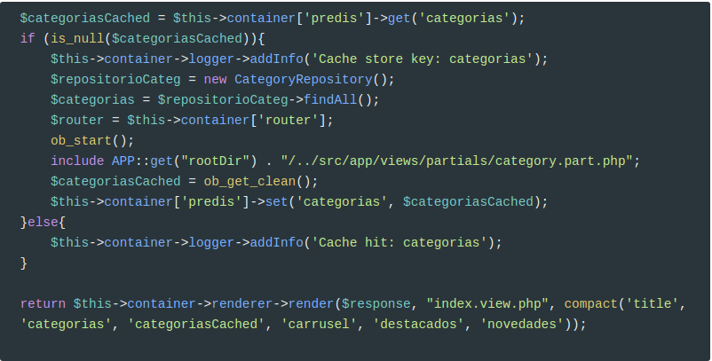
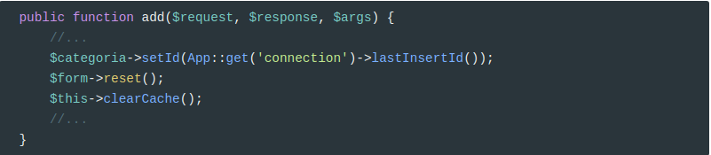
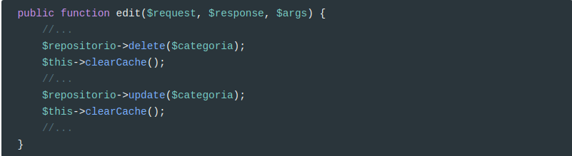

Usar redis en PHP
Redis (/ˈrɛdɪs/;[4][5] Remote Dictionary Server) is an open-source in-memory data structure project implementing a distributed, in-memory key-value database with optional durability. Redis supports different kinds of abstract data structures, such as strings, lists, maps, sets, sorted sets, hyperloglogs, bitmaps, streams and spatial indexes. The project is mainly developed by Salvatore Sanfilippo and is currently sponsored by Redis Labs.[6]
Básicamente es una estructura de datos que se almacena en memoria para tener un acceso ultra rápido y se usa habitualmente para cachear datos.
Es un tipo de base de datos donde se almacenan parejas clave => valor y permiten un acceso prácticamente inmediato a las mismas, independientemente del número de claves que tenga almacenadas.
Para instalar redis en Ubuntu:
xxxxxxxxxxsudo apt-get install redis-serverSi estamos usando apache, debemos reiniciar el servidor. Si hemos lanzado el servidor interno de PHP, lo hemos de reiniciar también.
Procedimiento de cacheo
Para cachear datos, vamos a usar el siguiente procedimiento:
- si la clave está en la caché, devolvemos el valor
- si no lo está la cacheamos y devolvemos el valor
- para invalidar la caché, simplemente borramos la clave. Invalidar significa borrar la clave de la caché para que se deba regenerar.
Cacheo de datos obtenidos mediante SQL
La página de productos por categorías tiene un paginador. Este paginador necesita conocer cuántos productos existen en una categoría, por lo que es un buen candidato para almacenar el resultado de la consulta en la caché.
El primer paso será instalar predis y monolog
xxxxxxxxxxcomposer require predis/prediscomposer require monolog/monolog
E inyectarlos en el controlador de servicios de Slim. Estos cambios los hemos de hacer en public/index.php
xxxxxxxxxx$container['predis'] = new Predis\Client();$container['logger'] = function($c) { $logger = new \Monolog\Logger('cache'); $file_handler = new \Monolog\Handler\StreamHandler('../logs/app.log'); $logger->pushHandler($file_handler); return $logger;};Y en public/admin/index.php
xxxxxxxxxx$container['predis'] = new Predis\Client();$container['logger'] = function($c) { $logger = new \Monolog\Logger('cache'); //CUIDADO CON LA RUTA!!! $file_handler = new \Monolog\Handler\StreamHandler('../../logs/app.log'); $logger->pushHandler($file_handler); return $logger;};Previamente hemos creado el directorio /logs en la raíz de nuestra aplicación. Añadid esta ruta a .gitignore
Ahora modificamos ProductRepository para inyectarle el contenedor de servicios:
xxxxxxxxxxuse Psr\Container\ContainerInterface;class ProductRepository extends QueryBuilder{ protected $container; // constructor receives container instance public function __construct(ContainerInterface $container = null) { $this->container = $container; parent::__construct('productos', 'Product'); } //....} Modificamos CategoryController::listado, para pasar el contenedor al repositorio.
xxxxxxxxxx$repositorioProductos = new ProductRepository($this->container);Ya podemos usar predis y monolog en ProductRepository

Los métodos básicos son: get, set y del. Por ejemplo:
xxxxxxxxxx$this->container['predis']->get("category-count-$id_categoria");Si el ID categoría es 1, devolverá el valor de la clave category-count-1, si existe o null en caso contrario.
xxxxxxxxxx$this->container['predis']->set("category-count-$id_categoria", $countCached);En este caso, estamos fijando la clavecategory-count-1 con el valor devuelto por la consulta.
Invalidar caché
Pero ahora, ¿qué pasa si añadimos un producto en una categoría, le cambiamos la categoría a uno existente o borramos un producto?. De alguna forma hemos de invalidar la caché para que se vuelva a regenerar.
Para ello, modificamos admin\ProductController creando un método que limpie la caché:

En este caso, usamos el método del() pasándole la clave a eliminar.
Y ahora lo usamos al añadir, modificar y eliminar:
En edit()

Y en add()

Si observamos el log, veremos cómo funciona la caché:
En el siguiente caso, se ha hecho la consulta SQL y se ha guardado la clave.
[2019-01-14 10:36:20] cache.INFO: Cache store key: category-count-1 [] []
En este caso, se ha obtenido el contador de la categoría de la caché.
[2019-01-14 10:36:26] cache.INFO: Cache hit: category-count-1 [] []
Y en este otro caso, se ha eliminado el contador de la categoría 1
[2019-01-14 10:36:04] cache.INFO: Cache delete key: category-count-1 [] []
Por lo que la siguiente vez, se volverá a calcular y guardar en caché.
Cachear objetos
Vamos a cachear los objetos Product devueltos por getDestacados(). En este caso lo que vamos a guardar en la caché son los objetos serializados.
Según la Wikipedia:
In computer science, in the context of data storage, serialization (or serialisation) is the process of translating data structures or object state into a format that can be stored (for example, in a file or memory buffer) or transmitted (for example, across a network connection link) and reconstructed later (possibly in a different computer environment).[1] When the resulting series of bits is reread according to the serialization format, it can be used to create a semantically identical clone of the original object. For many complex objects, such as those that make extensive use of references, this process is not straightforward. Serialization of object-oriented objects does not include any of their associated methods with which they were previously linked.
Y los devolvemos deserializados.
Es muy sencillo:

Modificamos PageController::home para pasarle el contenedor de servicios a ProductRepository:
$repositorio = new ProductRepository($this->container);
Y ya lo tenemos cacheado :)
Invalidar caché
Ahora cada vez que un producto pase de destacado a no destacado, o viceversa hemos de invalidar esta clave en la caché. También debemos invalidar caché cuando eliminemos un producto que era destacado y cuando añadamos un producto destacado. Y siempre que modifiquemos un producto destacado porque pueden haber variado los datos (precio, nombre, ...).
Por tanto, en ProductController::edit
//Formato diff
@@ -40,6 +40,12 @@
$this->container['predis']->del("category-count-$id_categoria");
$this->container->logger->addInfo("Cache delete key: category-count-$id_categoria");
}
+
+ private function clearCacheDestacados(){
+ $this->container['predis']->del("destacados");
+ $this->container->logger->addInfo("Cache delete key: destacados");
+ }
+
public function home($request, $response, $args) {
//Cuidado, al hacer redirección el mensaje flash se ha borrado en index.php
@@ -231,6 +237,9 @@
try {
$repositorio->delete($producto);
$this->clearCache($producto->getIdCategoria());
+ if ($producto->getDestacado() == 1) {
+ $this->clearCacheDestacados();
+ }
$this->container->flash->addMessage('formInfo', 'Producto eliminado correctamente');
return $response->withRedirect($this->container->router->pathFor('productos'), 303);
}catch(QueryException $qe) {
@@ -261,6 +270,7 @@
->toFile(APP::get('rootDir') . Product::RUTA_IMAGENES_CARRUSEL . $carrusel->getFileName());
}
$categoriaAntigua = $producto->getIdCategoria();
+ $destacadoAntiguo = $producto->getDestacado();
$producto = new Product($formElements['id']->getValue(), $formElements['nombre']->getValue(),
$formElements['descripcion']->getValue(), $formElements['categoria']->getValue(),
$formElements['precio']->getValue(),
@@ -275,7 +285,11 @@
$this->clearCache($categoriaAntigua);
$this->clearCache($producto->getIdCategoria());
}
-
+ //Si es destacado SIEMPRE borramos la caché porque puede ser que haya cambiado el nombre,
+ //el precio, la descripción o la foto.
+ if (($producto->getDestacado() == 1) || ($destacadoAntiguo != $producto->getDestacado())) {
+ $this->clearCacheDestacados();
+ }
$form->reset();
$this->container->flash->addMessage('formInfo', 'Producto guardado correctamente');
return $response->withRedirect($this->container->router->pathFor('edit-product', ['id' => $formElements['id']->getValue()]), 303);
@@ -341,6 +355,9 @@
$repositorio->save($producto);
$producto->setId(App::get('connection')->lastInsertId());
$this->clearCache($producto->getIdCategoria());
+ if ($producto->getDestacado() == 1) {
+ $this->clearCacheDestacados();
+ }
$form->reset();
$this->container->flash->addMessage('formInfo', 'Producto guardado correctamente');
return $response->withRedirect($this->container->router->pathFor('edit-product', ['id' => $producto->getId()]), 303);
Cacheo HTML
En este caso, pretendemos cachear código HTML generado mediante PHP. Por ejemplo, vamos a cachear el menú de categorías.
Este caso es un poco diferente y más complejo, porque hemos de generar código HTML desde el partial category.part.php
El código HTML cacheado lo guardamos en la variable $categoriasCached que le pasamos a la plantilla, de tal forma que si esta variable está informada, simplemente hace un echo y si no lo está, genera el código HTML.

Y ahora modificamos PageController::home

Vamos a explicar los cambios introducidos:
Para renderizar el contenido de la plantilla hacemos lo siguiente:
ob_start(); include APP::get("rootDir") . "/../src/app/views/partials/category.part.php"; $categoriasCached = ob_get_clean(); $this->container['predis']->set('categorias', $categoriasCached);ob_start();impide que se envía la salida al servidor web (apache) y lo guarda en un bufferincludeprocesa el código PHP de la plantilla$categoriasCached = ob_get_clean();guarda el contenido del buffer en la variable$categoriasCached
Como la plantilla usa dos variables:
$routery$categorias, las hemos de informar antes de hacer elinclude.Finalmente, a
render()le pasamos también la variable$categoriasCached
Este mismo cambio se debe hacer en CategoryController::listado y en ProductController::ficha
Para seguir el principio DRY (Don't Repeat Yourself), vamos a mover este código a una nueva clase llamada ProyectoWeb\app\utils\Cache que también inyectaremos al contenedor de servicios.

Modificamos index.php para inyectar esta nueva clase al contenedor de servicios:
//...
use ProyectoWeb\app\utils\Cache;
//...
$container['cache'] = new Cache($container);
Y ahora modificamos los controladores:
PageController
public function home($request, $response, $args) {
$title = "Inicio";
$repositorio = new ProductRepository($this->container);
$carrusel = $repositorio->getCarrusel();
$destacados = $repositorio->getDestacados();
$novedades = $repositorio->getNovedades();
$categoriasCached =$this->container['predis']->get('categorias');
if (is_null($categoriasCached)) {
$categoriasCached = $this->container['cache']->cacheAndGetCategorias();
}else{
$this->container->logger->addInfo('Cache hit: categorias');
}
return $this->container->renderer->render($response, "index.view.php", compact('title', 'categorias', 'categoriasCached', 'carrusel', 'destacados', 'novedades'));
}
ProductController
public function ficha($request, $response, $args) {
extract($args);
$repositorio = new ProductRepository();
try {
$producto = $repositorio->findById($id);
}catch(NotFoundException $nfe) {
return $response->write("Producto no encontrado");
}
$title = $producto->getNombre();
$relacionados = $repositorio->getRelacionados($producto->getId(), $producto->getIdCategoria());
$categoriasCached =$this->container['predis']->get('categorias');
if (is_null($categoriasCached)) {
$categoriasCached = $this->container['cache']->cacheAndGetCategorias();
}else{
$this->container->logger->addInfo('Cache hit: categorias');
}
return $this->container->renderer->render($response, "product.view.php", compact('title', 'categorias', 'categoriasCached', 'producto', 'relacionados'));
}
Y CategoryController
xxxxxxxxxxpublic function listado($request, $response, $args) { extract($args); $repositorio = new CategoryRepository(); try { $categoriaActual = $repositorio->findById($id); }catch(NotFoundException $nfe) { return $response->write("Categoría no encontrada"); } $title = $categoriaActual->getNombre(); $repositorioProductos = new ProductRepository($this->container); //Datos para el paginador $currentPage = ($currentPage ?? 1); $totalItems = $repositorioProductos->getCountByCategory($categoriaActual->getId()); $itemsPerPage = App::get('config')['itemsPerPage']; $urlPattern = $this->container->router->pathFor('categoria', ['nombre' => \ProyectoWeb\app\utils\Utils::encodeURI($categoriaActual->getNombre()), 'id' => $categoriaActual->getId()]) . '/page/(:num)'; $paginator = new Paginator($totalItems, $itemsPerPage, $currentPage, $urlPattern); $productos = $repositorioProductos->getByCategory($categoriaActual->getId(), $itemsPerPage, $currentPage); $categoriasCached =$this->container['predis']->get('categorias'); if (is_null($categoriasCached)) { $categoriasCached = $this->container['cache']->cacheAndGetCategorias(); }else{ $this->container->logger->addInfo('Cache hit: categorias'); } return $this->container->renderer->render($response, "categoria.view.php", compact('title', 'categorias', 'categoriasCached', 'categoriaActual', 'productos', 'paginator')); }Invalidar caché
Ahora hemos de invalidar la caché en admin/CategoryController

Y usamos el método cada vez que añadimos, modificamos o borramos una categoría.


Credits.
Víctor Ponz victorponz@gmail.com
Este material está licenciado bajo una licencia Creative Commons, Attribution-NonCommercial-ShareAlike